Free to Use
No cost to start tracking your matches.
Keep score quickly, follow the match clearly, and stay focused on playing. Built for singles and doubles, with support for multiple games, deuce, tie-breaks, live scoreboard sharing, and full score history.
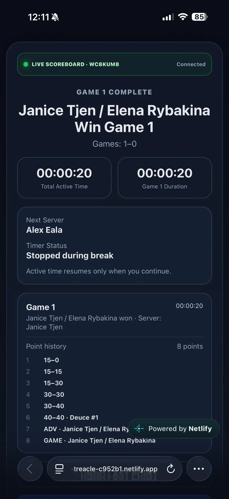
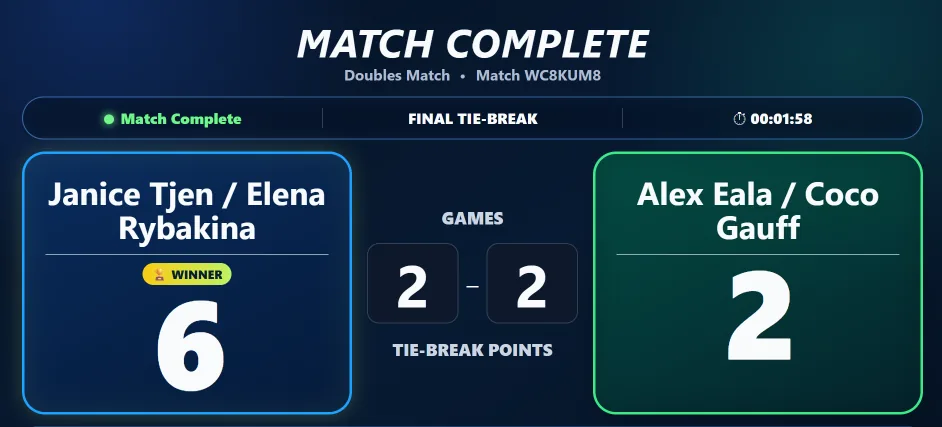
No cost to start tracking your matches.
Made for 1v1 and 2v2 tennis games.
Share your match on TV, tablet, or another phone.
The app is designed to stay simple for everyday players while still giving you the match details you need.
Generate a unique match link and show the live score on a TV, tablet, laptop, or another phone.
All core features are available at no cost, making it easy for recreational players to get started.
Track one-on-one matches or doubles matches with proper player and serving setup.
Tap one big button after each point so score recording stays quick and clear during play.
Play more than one game in a session and keep the overall game score updated automatically.
Set your preferred deuce rules and tie-break rules to suit casual or competitive play.
Made a wrong tap? Undo the last point and continue the match without confusion.
Review point-by-point progress, game results, and a full summary at the end of the session.
Many recreational tennis players know the feeling: after a long rally, a tiring point, or a fast-moving game, it is easy to forget the exact score.
Self-Operated Tennis Score was created to make score tracking simpler. The goal is to help players spend less time worrying about the score and more time focusing on the match.
It is practical, clear, and built for real tennis sessions—whether you are playing singles, doubles, or sharing the score live with others.
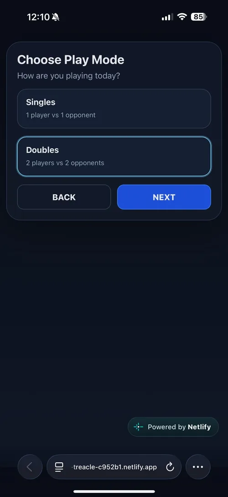
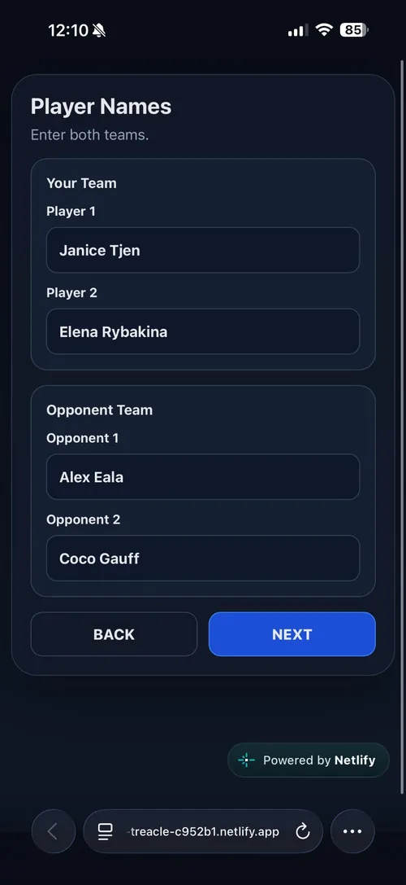
From match setup to live scoring, game breaks, final tie-breaks, and match completion.
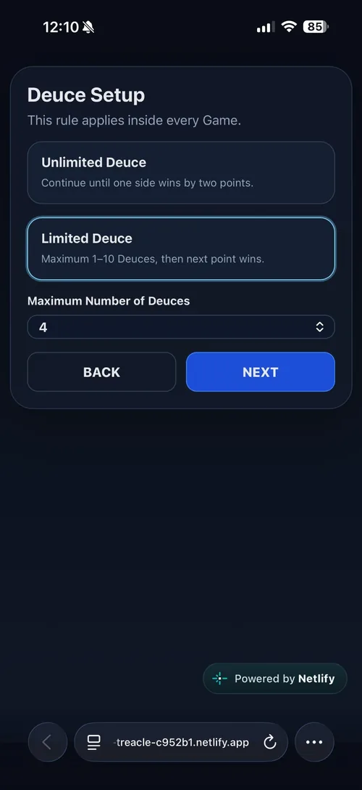
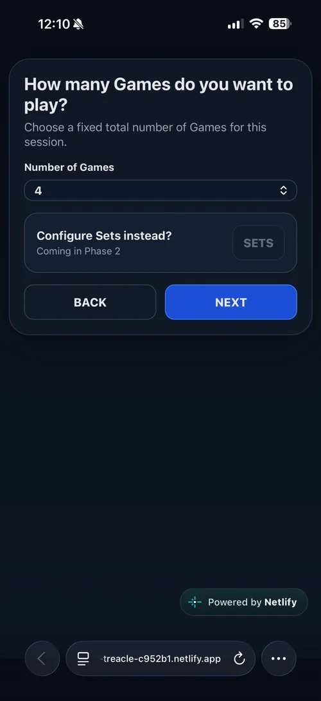
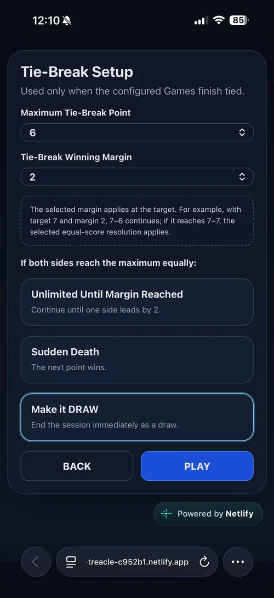
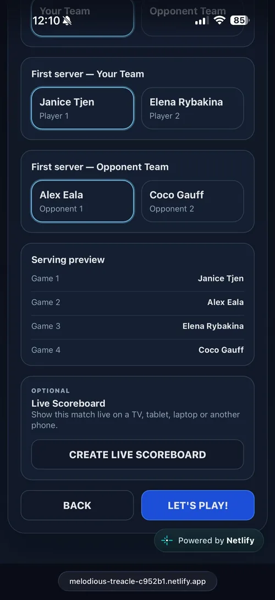
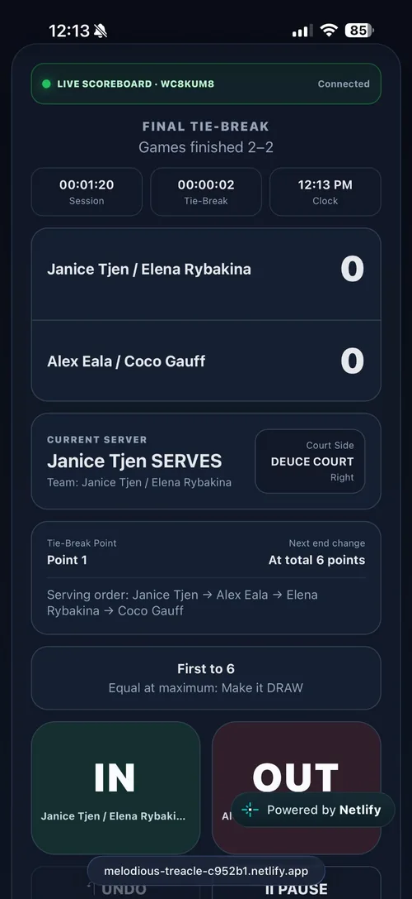
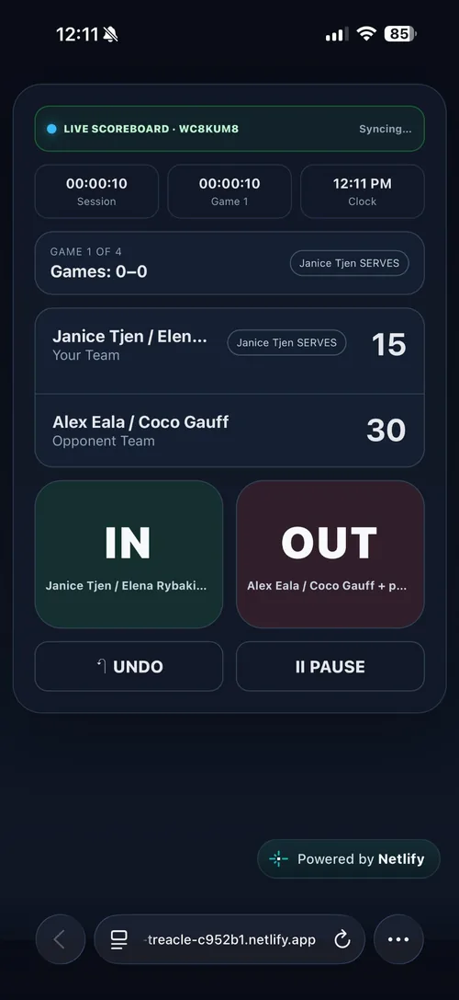
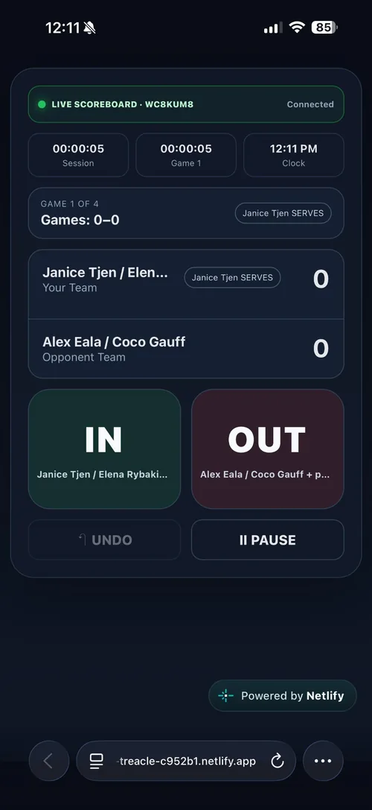
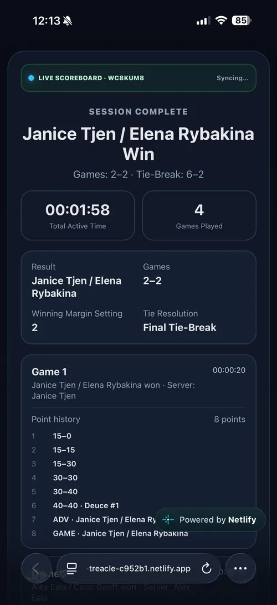
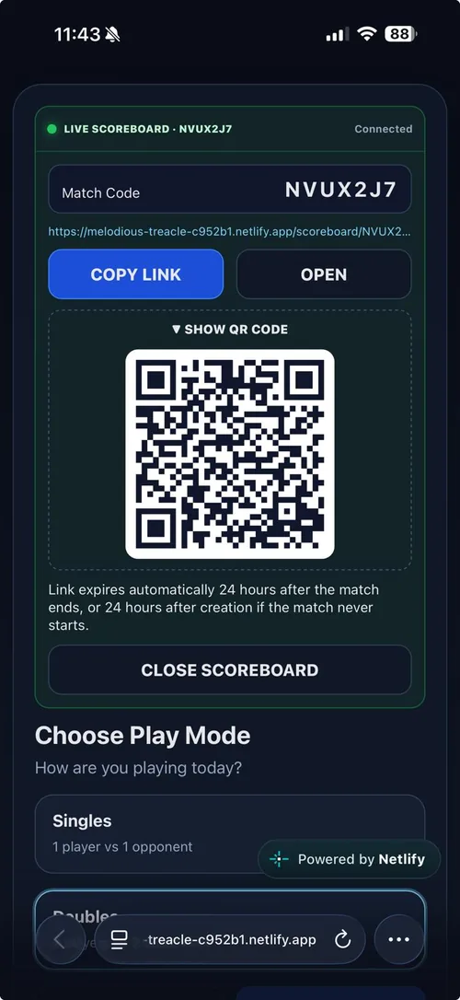
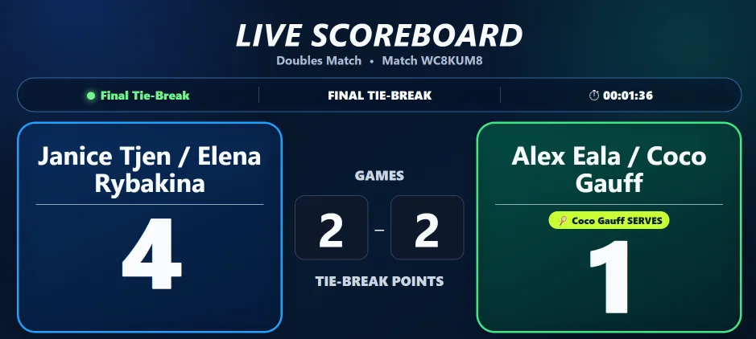
Create a unique match link and share the live scoreboard with spectators, players, or officials. It works beautifully on bigger screens for amateur and recreational matches.
You can already use Self-Operated Tennis Score in your browser today. Native Android and iOS apps are planned for a future release.
I’d love to hear from you. Use the feedback form for general enquiries, suggestions, feature ideas, bug reports, or anything else related to Self-Operated Tennis Score.
The form will open securely in Google Forms in a new tab.
Make scoring simpler, clearer, and easier to share.